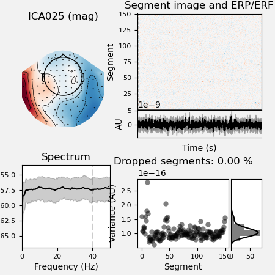
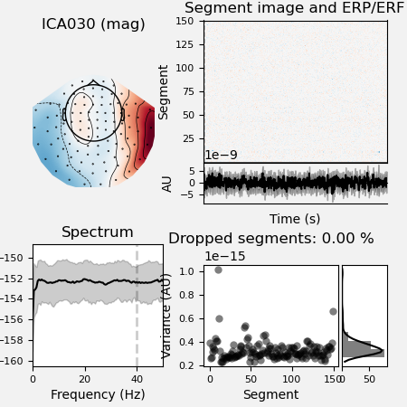
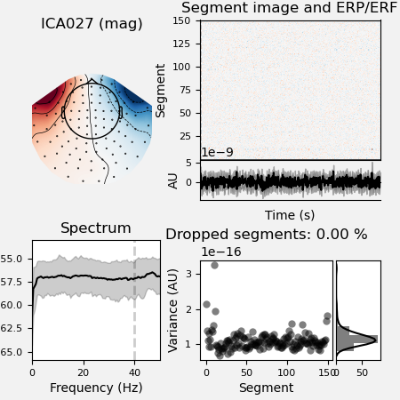
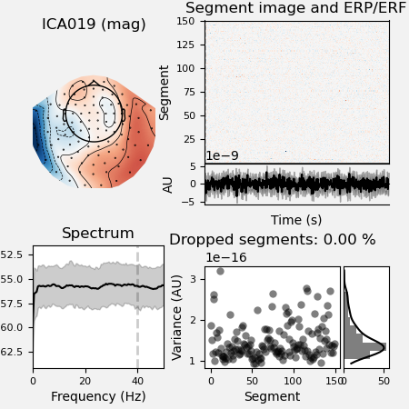
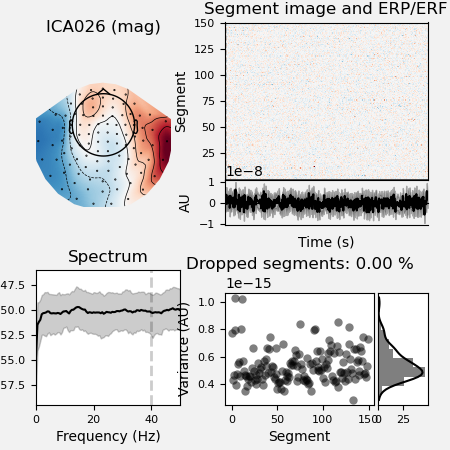
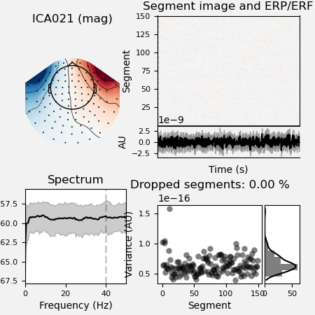
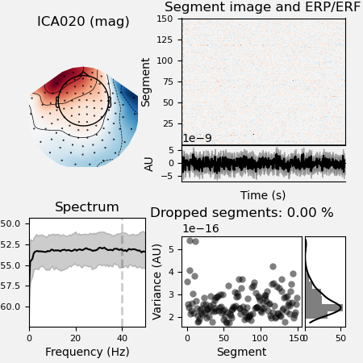

Note
Click here to download the full example code
02. Preprocess MEG data¶
The preprocessing pipeline runs the ICA algorithm for an automatic removal of eyes and heart related artefacts. A report is automatically generated and can be used to correct and/or fine-tune the correction in each subject.
# Authors: Annalisa Pascarella <a.pascarella@iac.cnr.it>
# License: BSD (3-clause)
# sphinx_gallery_thumbnail_number = 2
Import modules¶
The first step is to import the modules we need in the script. We import mainly from nipype and ephypype packages.
import json
import pprint
import os.path as op
import nipype.pipeline.engine as pe
from ephypype.nodes import create_iterator, create_datagrabber
from ephypype.pipelines.preproc_meeg import create_pipeline_preproc_meeg
Define data and variables¶
Let us specify the variables that are specific for the data analysis (the
main directories where the data are stored, the list of subjects and
sessions, …) and the variables specific for the particular pipeline
(downsampling frequency, EOG and ECG channels, cut-off frequencies, …) in a
json file
(if it is does work, try to go on the github page, and right-click “Save As” on the Raw button).
# Read experiment params as json
params = json.load(open("params.json"))
pprint.pprint({'parameters': params["general"]})
data_type = params["general"]["data_type"]
subject_ids = params["general"]["subject_ids"]
NJOBS = params["general"]["NJOBS"]
session_ids = params["general"]["session_ids"]
is_short = params["general"]["short"] # to analyze a shorter segment of data
if "data_path" in params["general"].keys():
data_path = params["general"]["data_path"]
else:
data_path = op.expanduser("~")
print("data_path : %s" % data_path)
{'parameters': {'NJOBS': 1,
'data_path': '/home/pasca/Science/workshop/PracticalMEEG/ds000117/derivatives/meg_derivatives',
'data_type': 'fif',
'session_ids': ['01', '02'],
'short': False,
'subject_ids': ['sub-01'],
'subjects_dir': '/home/pasca/Science/workshop/PracticalMEEG/ds000117/FSF'}}
data_path : /home/pasca/Science/workshop/PracticalMEEG/ds000117/derivatives/meg_derivatives
Then, we read the parameters for preprocessing from the json file and print
it. In the json file we set : the names of EoG and ECG channels, the
filter settings, the downsampling frequency, the number of ICA components
specified as a fraction of explained variance (0.999) and a reject
dictionary to exclude time segments.
The list of all input can be found in the definition of the pipeline
create_pipeline_preproc_meeg()
pprint.pprint({'preprocessing parameters': params["preprocessing"]})
l_freq = params["preprocessing"]['l_freq']
h_freq = params["preprocessing"]['h_freq']
ECG_ch_name = params["preprocessing"]['ECG_ch_name']
EoG_ch_name = params["preprocessing"]['EoG_ch_name']
variance = params["preprocessing"]['variance']
reject = params["preprocessing"]['reject']
down_sfreq = params["preprocessing"]['down_sfreq']
{'preprocessing parameters': {'ECG_ch_name': 'EEG063',
'EoG_ch_name': ['EEG061', 'EEG062'],
'down_sfreq': 300,
'h_freq': 40,
'l_freq': 0.1,
'reject': {'grad': 4e-10, 'mag': 4e-12},
'variance': 0.999}}
Specify Nodes¶
Before to create a workflow we have to create the nodes that define the workflow itself. In this example the main Nodes are
infosourceis a Node that just distributes values (Infosource);datasourceis a DataGrabber Node that allows the user to define flexible search patterns which can be parameterized by user defined inputs (DataGrabber) ;preproc_meg_pipelineis a Node containing the NeuroPycon pipeline created bycreate_pipeline_preproc_meeg()(Preprocessing Node).
Infosource¶
The ephypype function create_iterator() creates the
infosource node that allows to distributes values: when we need to feed
the different subject names into the workflow we only need a Node that can
receive the input and distribute those inputs to the workflow.
infosource = create_iterator(['subject_id', 'session_id'],
[subject_ids, session_ids])
DataGrabber¶
Then we create the datasource node to grab data. The ephypype function
create_datagrabber()
creates a node to grab data using DataGrabber in Nipype. The DataGrabber
Interface allows to define flexible search patterns which can be
parameterized by user defined inputs (such as subject ID, session, etc.).
In this example we parameterize the pattern search with subject_id and
session_id. The template_args in this node iterates upon the values
in the infosource node.
We look for MEG data contained in ses-meg/meg (ses-meg/meg_short) folder.
if is_short:
template_path = '%s/ses-meg/meg_short/*%s*run*%s*sss*.fif'
else:
template_path = '%s/ses-meg/meg/*%s*run*%s*sss*.fif'
template_args = [['subject_id', 'subject_id', 'session_id']]
datasource = create_datagrabber(data_path, template_path, template_args)
Preprocessing Node¶
Ephypype creates for us a pipeline which can be connected to these
nodes we created. The preprocessing pipeline is implemented by the function
create_pipeline_preproc_meeg(), thus
to instantiate this pipeline node, we pass our parameters to it.
Each pipeline provided by NeuroPycon requires two different kind of inputs:
inputs of the pipeline
inputnode: particular inputs defined after the creation of the pipeline; an inputnode of a pipeline is defined by an output of a previous Node.
For example, looking at the definition of create_pipeline_preproc_meeg()
we have the input of the pipeline (e.g., main_path, lfreq) and the
inputnode raw_file and subject_id.
In the next section Specify Workflows and Connect Nodes we’ll see how to specify these inputnode.
preproc_workflow = create_pipeline_preproc_meeg(
data_path, pipeline_name="preproc_meg_dsamp_pipeline",
l_freq=l_freq, h_freq=h_freq,
variance=variance, ECG_ch_name=ECG_ch_name, EoG_ch_name=EoG_ch_name,
data_type=data_type, down_sfreq=down_sfreq)
*** main_path -> /home/pasca/Science/workshop/PracticalMEEG/ds000117/derivatives/meg_derivatives ***
Specify Workflows and Connect Nodes¶
The purpose of Workflow is to guide the sequential execution of Nodes: we create a main Workflow to connect the different Nodes and define the data flow from the outputs of one Node to the inputs of the connected Nodes. The specified connections create our workflow: the created nodes and the dependencies between them are represented as a graph (see Workflow graph), in this way it is easy to see which nodes are executed and in which order.
It is important to point out that we have to connect the output and input fields of each node to the output and input fields of another node.
Now, we create our main workflow and specify the base_dir which tells
nipype the directory in which to store the outputs.
preproc_wf_name = 'preprocessing_dsamp_short_workflow' if is_short \
else 'preprocessing_dsamp_workflow'
main_workflow = pe.Workflow(name=preproc_wf_name)
main_workflow.base_dir = data_path
We then connect the nodes two at a time. First, we connect the two outputs
(subject_id and session_id) of the Infosource node to
the DataGrabber node. So, these two nodes taken together can
grab data.
main_workflow.connect(infosource, 'subject_id', datasource, 'subject_id')
main_workflow.connect(infosource, 'session_id', datasource, 'session_id')
Similarly, for the inputnode of the Preprocessing Node. Things will become clearer in a moment when we plot the graph of the workflow.
main_workflow.connect(infosource, 'subject_id',
preproc_workflow, 'inputnode.subject_id')
main_workflow.connect(datasource, 'raw_file',
preproc_workflow, 'inputnode.raw_file')
Note
The inputnode raw_file of the pipeline node preproc_workflow
is the output of datasource node.
Run workflow¶
After we have specified all the nodes and connections of the workflow, the
last step is to run it by calling the run() method. It’s also possible to
generate static graph representing nodes and connections between them by
calling write_graph method.
main_workflow.write_graph(graph2use='colored') # optional
'/home/pasca/Science/workshop/PracticalMEEG/ds000117/derivatives/meg_derivatives/preprocessing_dsamp_workflow/graph.png'
Workflow graph¶
Take a moment to pause and notice how the connections here correspond to how we connected the nodes. In other words, the connections we specified created the workflow: the nodes and the dependencies between them are represented as a graph, in this way it is easy to see which nodes are executed and in which order.
import matplotlib.pyplot as plt # noqa
img = plt.imread(op.join(data_path, preproc_wf_name, 'graph.png'))
plt.figure(figsize=(6, 6))
plt.imshow(img)
plt.axis('off')
(-0.5, 351.5, 498.5, -0.5)
Note
We have to connect the output and input fields of each node to the output and input fields of another node.
Run¶
Finally, we are now ready to execute our workflow.
main_workflow.config['execution'] = {'remove_unnecessary_outputs': 'false'}
# Run workflow locally on 1 CPU
main_workflow.run(plugin='LegacyMultiProc', plugin_args={'n_procs': NJOBS})
<networkx.classes.digraph.DiGraph object at 0x7f00f6f63c70>
Note
If we rerun the workflow, only the nodes whose inputs have changed since the last run will be executed again. If not, it will simply return cached results. This is achieved by recording a hash of the inputs.
Results¶
The output of this workflow is the preprocessed data stored in the workflow
directory defined by base_dir. Here we find the folder
preprocessing_dsamp_workflow where all the results of each iteration are
sorted by nodes. The cleaned data will be used in 03. Compute inverse solution.
It’s a good rule to inspect the report file saved in the ica dir to look
at the excluded ICA components.
Note
You could use this notebook
to better inspect your ICs.
import mne # noqa
from ephypype.gather import get_results # noqa
ica_files, raw_files = get_results(main_workflow.base_dir,
main_workflow.name, pipeline='ica')
for ica_file, raw_file in zip(ica_files, raw_files):
print(f'*** {raw_file} ***')
raw = mne.io.read_raw_fif(raw_file)
ica = mne.preprocessing.read_ica(ica_file)
ica.plot_properties(raw, picks=ica.exclude, figsize=[4.5, 4.5])
# ica.plot_components()
# ica.plot_sources(raw)
- 
- 
- 
- 
- 
- 
- 
*** /home/pasca/Science/workshop/PracticalMEEG/ds000117/derivatives/meg_derivatives/preprocessing_dsamp_workflow/preproc_meg_dsamp_pipeline/_session_id_01_subject_id_sub-01/ica/sub-01_ses-meg_task-facerecognition_run-01_proc-sss_meg_filt_dsamp_ica.fif ***
Opening raw data file /home/pasca/Science/workshop/PracticalMEEG/ds000117/derivatives/meg_derivatives/preprocessing_dsamp_workflow/preproc_meg_dsamp_pipeline/_session_id_01_subject_id_sub-01/ica/sub-01_ses-meg_task-facerecognition_run-01_proc-sss_meg_filt_dsamp_ica.fif...
/home/pasca/Tools/python/packages/neuropycon/ephypype/doc/workshop/01_meg/plot_01_meg_preprocessing.py:293: RuntimeWarning: This filename (/home/pasca/Science/workshop/PracticalMEEG/ds000117/derivatives/meg_derivatives/preprocessing_dsamp_workflow/preproc_meg_dsamp_pipeline/_session_id_01_subject_id_sub-01/ica/sub-01_ses-meg_task-facerecognition_run-01_proc-sss_meg_filt_dsamp_ica.fif) does not conform to MNE naming conventions. All raw files should end with raw.fif, raw_sss.fif, raw_tsss.fif, _meg.fif, _eeg.fif, _ieeg.fif, raw.fif.gz, raw_sss.fif.gz, raw_tsss.fif.gz, _meg.fif.gz, _eeg.fif.gz or _ieeg.fif.gz
raw = mne.io.read_raw_fif(raw_file)
Range : 67800 ... 157799 = 226.000 ... 525.997 secs
Ready.
/home/pasca/Tools/python/packages/neuropycon/ephypype/doc/workshop/01_meg/plot_01_meg_preprocessing.py:294: RuntimeWarning: This filename (/home/pasca/Science/workshop/PracticalMEEG/ds000117/derivatives/meg_derivatives/preprocessing_dsamp_workflow/preproc_meg_dsamp_pipeline/_session_id_01_subject_id_sub-01/ica/sub-01_ses-meg_task-facerecognition_run-01_proc-sss_meg_filt_dsamp_ica_solution.fif) does not conform to MNE naming conventions. All ICA files should end with -ica.fif, -ica.fif.gz, _ica.fif or _ica.fif.gz
ica = mne.preprocessing.read_ica(ica_file)
Reading /home/pasca/Science/workshop/PracticalMEEG/ds000117/derivatives/meg_derivatives/preprocessing_dsamp_workflow/preproc_meg_dsamp_pipeline/_session_id_01_subject_id_sub-01/ica/sub-01_ses-meg_task-facerecognition_run-01_proc-sss_meg_filt_dsamp_ica_solution.fif ...
Now restoring ICA solution ...
Ready.
Using multitaper spectrum estimation with 7 DPSS windows
/home/pasca/Tools/python/packages/neuropycon/ephypype/doc/workshop/01_meg/plot_01_meg_preprocessing.py:295: RuntimeWarning: (X, Y) fit (3.1, 32.2) more than 20 mm from head frame origin
ica.plot_properties(raw, picks=ica.exclude, figsize=[4.5, 4.5])
Not setting metadata
150 matching events found
No baseline correction applied
0 projection items activated
/home/pasca/Tools/python/packages/neuropycon/ephypype/doc/workshop/01_meg/plot_01_meg_preprocessing.py:295: RuntimeWarning: (X, Y) fit (3.1, 32.2) more than 20 mm from head frame origin
ica.plot_properties(raw, picks=ica.exclude, figsize=[4.5, 4.5])
Not setting metadata
150 matching events found
No baseline correction applied
0 projection items activated
/home/pasca/Tools/python/packages/neuropycon/ephypype/doc/workshop/01_meg/plot_01_meg_preprocessing.py:295: RuntimeWarning: (X, Y) fit (3.1, 32.2) more than 20 mm from head frame origin
ica.plot_properties(raw, picks=ica.exclude, figsize=[4.5, 4.5])
Not setting metadata
150 matching events found
No baseline correction applied
0 projection items activated
*** /home/pasca/Science/workshop/PracticalMEEG/ds000117/derivatives/meg_derivatives/preprocessing_dsamp_workflow/preproc_meg_dsamp_pipeline/_session_id_02_subject_id_sub-01/ica/sub-01_ses-meg_task-facerecognition_run-02_proc-sss_meg_filt_dsamp_ica.fif ***
Opening raw data file /home/pasca/Science/workshop/PracticalMEEG/ds000117/derivatives/meg_derivatives/preprocessing_dsamp_workflow/preproc_meg_dsamp_pipeline/_session_id_02_subject_id_sub-01/ica/sub-01_ses-meg_task-facerecognition_run-02_proc-sss_meg_filt_dsamp_ica.fif...
/home/pasca/Tools/python/packages/neuropycon/ephypype/doc/workshop/01_meg/plot_01_meg_preprocessing.py:293: RuntimeWarning: This filename (/home/pasca/Science/workshop/PracticalMEEG/ds000117/derivatives/meg_derivatives/preprocessing_dsamp_workflow/preproc_meg_dsamp_pipeline/_session_id_02_subject_id_sub-01/ica/sub-01_ses-meg_task-facerecognition_run-02_proc-sss_meg_filt_dsamp_ica.fif) does not conform to MNE naming conventions. All raw files should end with raw.fif, raw_sss.fif, raw_tsss.fif, _meg.fif, _eeg.fif, _ieeg.fif, raw.fif.gz, raw_sss.fif.gz, raw_tsss.fif.gz, _meg.fif.gz, _eeg.fif.gz or _ieeg.fif.gz
raw = mne.io.read_raw_fif(raw_file)
Range : 18600 ... 108599 = 62.000 ... 361.997 secs
Ready.
/home/pasca/Tools/python/packages/neuropycon/ephypype/doc/workshop/01_meg/plot_01_meg_preprocessing.py:294: RuntimeWarning: This filename (/home/pasca/Science/workshop/PracticalMEEG/ds000117/derivatives/meg_derivatives/preprocessing_dsamp_workflow/preproc_meg_dsamp_pipeline/_session_id_02_subject_id_sub-01/ica/sub-01_ses-meg_task-facerecognition_run-02_proc-sss_meg_filt_dsamp_ica_solution.fif) does not conform to MNE naming conventions. All ICA files should end with -ica.fif, -ica.fif.gz, _ica.fif or _ica.fif.gz
ica = mne.preprocessing.read_ica(ica_file)
Reading /home/pasca/Science/workshop/PracticalMEEG/ds000117/derivatives/meg_derivatives/preprocessing_dsamp_workflow/preproc_meg_dsamp_pipeline/_session_id_02_subject_id_sub-01/ica/sub-01_ses-meg_task-facerecognition_run-02_proc-sss_meg_filt_dsamp_ica_solution.fif ...
Now restoring ICA solution ...
Ready.
Using multitaper spectrum estimation with 7 DPSS windows
/home/pasca/Tools/python/packages/neuropycon/ephypype/doc/workshop/01_meg/plot_01_meg_preprocessing.py:295: RuntimeWarning: (X, Y) fit (3.1, 32.2) more than 20 mm from head frame origin
ica.plot_properties(raw, picks=ica.exclude, figsize=[4.5, 4.5])
Not setting metadata
150 matching events found
No baseline correction applied
0 projection items activated
/home/pasca/Tools/python/packages/neuropycon/ephypype/doc/workshop/01_meg/plot_01_meg_preprocessing.py:295: RuntimeWarning: (X, Y) fit (3.1, 32.2) more than 20 mm from head frame origin
ica.plot_properties(raw, picks=ica.exclude, figsize=[4.5, 4.5])
Not setting metadata
150 matching events found
No baseline correction applied
0 projection items activated
/home/pasca/Tools/python/packages/neuropycon/ephypype/doc/workshop/01_meg/plot_01_meg_preprocessing.py:295: RuntimeWarning: (X, Y) fit (3.1, 32.2) more than 20 mm from head frame origin
ica.plot_properties(raw, picks=ica.exclude, figsize=[4.5, 4.5])
Not setting metadata
150 matching events found
No baseline correction applied
0 projection items activated
/home/pasca/Tools/python/packages/neuropycon/ephypype/doc/workshop/01_meg/plot_01_meg_preprocessing.py:295: RuntimeWarning: (X, Y) fit (3.1, 32.2) more than 20 mm from head frame origin
ica.plot_properties(raw, picks=ica.exclude, figsize=[4.5, 4.5])
Not setting metadata
150 matching events found
No baseline correction applied
0 projection items activated
/home/pasca/Tools/python/packages/neuropycon/ephypype/doc/workshop/01_meg/plot_01_meg_preprocessing.py:295: RuntimeWarning: (X, Y) fit (3.1, 32.2) more than 20 mm from head frame origin
ica.plot_properties(raw, picks=ica.exclude, figsize=[4.5, 4.5])
Not setting metadata
150 matching events found
No baseline correction applied
0 projection items activated
Total running time of the script: ( 0 minutes 18.899 seconds)